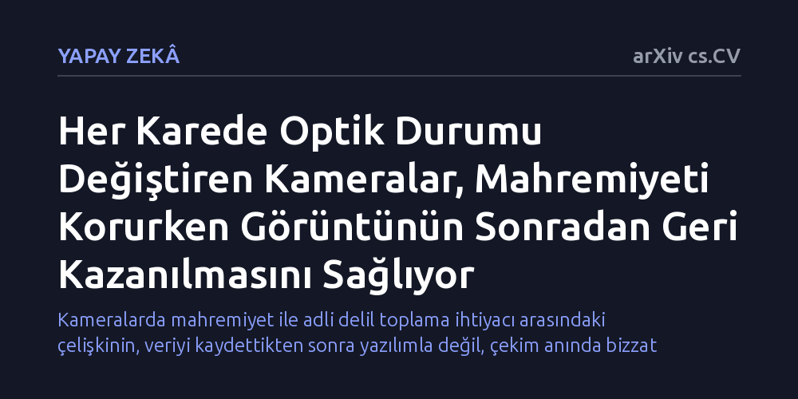

YAPAY-ZEKA · arXiv cs.CV · 2026-10-23
Araştırmacılar, kameralarda hem çekim anında mahremiyeti koruyan hem de gerektiğinde görüntünün aslına uygun kurtarılmasını sağlayan yeni bir yöntem araştırdı. Her karede optik durumu değiştiren bir prototiple, sistem anahtarı olmadan görüntünün çözülemeyeceği ancak yetkili ellerde yüz kimliğinin başarıyla kurtarılabildiği gösterildi.
Kameralarda mahremiyet ile adli delil toplama ihtiyacı arasındaki çelişkinin, veriyi kaydettikten sonra yazılımla değil, çekim anında bizzat optik donanım seviyesinde çözülebileceğini gösteriyor.

Akıllı şehirler, güvenlik sistemleri ve tüketici cihazları sayesinde kameralar günlük hayatımızın her alanını kuşatmış durumda. Ancak bu yaygın görsel algılama ortamı köklü bir güvenlik ikilemini beraberinde getiriyor: Bugün kaydedilen ve kişisel mahremiyet gereği gizli kalması gereken bir bilginin, yarın meşru bir adli soruşturma veya güvenlik gerekçesiyle aslına uygun biçimde geri getirilmesi gerekebiliyor.
Günümüzde kullanılan güvenlik önlemleri genellikle iki eksik yaklaşımdan birine dayanıyor. Sistemler ya görüntüyü sensörde oluşturduktan sonra yazılımla yüzleri bulanıklaştırıyor—ki bu durum veriyi işlenene kadar savunmasız bırakıyor—ya da çekim esnasında bilgiyi optik olarak geri dönüşü olmayacak şekilde bastırıyor. Araştırmacılar, bu iki uç arasındaki çıkmazı aşmanın ve bilgiyi çekim anında korurken gelecekteki yetkili erişime açık tutmanın yolunu arıyor.
Araştırma ekibi işe bilgi teorisi analiziyle başladı ve lensleri ile sensörü sabit olan geleneksel optik sistemlerde mahremiyet ile kurtarılabilirliğin aynı anda sağlanamayacağını matematiksel olarak kanıtladı. Sabit bir optik düzende, görüntüyü sonradan aslına sadık şekilde oluşturmaya yetecek kadar bilgi sensörde kalıyorsa, bu bilgi ham kaydı ele geçiren yetkisiz bir gözlemci tarafından da okunabilir kalıyor.
Ekip bu temel sınırlamayı aşmak için 'koşullu görüntüleme' (conditional imaging) adını verdiği yeni bir yaklaşım geliştirdi ve özel bir kamera prototipi inşa etti. Bu sistemde kameranın optik durumu sabit kalmıyor; kaydedilen her bir kare için fiziksel olarak değiştiriliyor. Böylece sensörün kaydettiği ham ölçüm tek başına sahneyi tamamen gizlerken, görüntüyü aslına uygun biçimde yeniden oluşturabilmek için o karenin çekildiği andaki fiziksel sistem durumunun kesin olarak bilinmesi gerekiyor.
Geliştirilen kamera prototipi, gerçek insan yüzlerinden oluşan bir veri kümesi üzerinde giderek zorlaşan kurtarma girişimleriyle sınandı. Sistem; ham veriyi doğrudan ekrana yansıtma, tersine matematiksel algoritmalarla çözme, derin öğrenmeye dayalı gelişmiş yeniden yapılandırma modelleri ve otomatik yüz tanıma algoritmaları gibi en güçlü saldırı senaryolarına karşı test edildi.
Elde edilen deneysel sonuçlar, kameranın anlık fiziksel durum bilgisine sahip olmayan gözlemcilerin görsel içerikten kimlik tespit edemediğini ortaya koydu. Buna karşılık, fiziksel durumu elinde bulunduran yetkili tarafların yaptığı yeniden yapılandırmalarda kişilerin yüz kimliği ve detayları başarıyla korunarak kurtarıldı.
Bu çalışma, dijital gözetleme çağında mahremiyetin sadece yazılım katmanındaki şifrelerle değil, bizzat ışığı toplayan donanımın fiziksel hareketleriyle korunabileceğini gösteriyor. Kameranın her karede değişen optik parametrelerini adeta fiziksel bir şifreleme anahtarı gibi kullanmak, veriyi henüz dijital bir imgeye dönüşmeden donanım seviyesinde güvenceye alıyor.
Bununla birlikte, yöntemin günlük cihazlara girebilmesi için her kareye ait fiziksel optik durum bilgilerinin güvenli biçimde depolanması ve değişken çevre aydınlatmalarında sistemin dayanıklılığının doğrulanması gerekiyor. Bilgi teorisini fiziksel kamera tasarımıyla buluşturan bu yaklaşım, hem mahremiyete saygılı hem de güvenliği elden bırakmayan yeni nesil algılama sistemlerinin kapısını aralıyor.